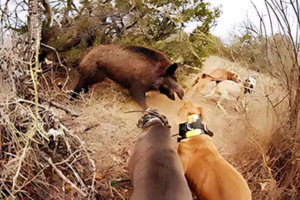

¿Qué es la Caza Mayor?
La caza mayor se refiere a la actividad de cazar animales de gran tamaño, generalmente mamíferos que requieren un alto nivel de habilidad, destreza y una mayor preparación. Es una práctica que se lleva a cabo en diversas partes del mundo, siendo más frecuente en áreas rurales o en terrenos de difícil acceso.
Tipos de Animales en la Caza Mayor
- Ciervos: Son uno de los objetivos más comunes en la caza mayor, conocidos por su tamaño y su capacidad para moverse rápido en el bosque.
- Jabalíes: Son muy populares en la caza mayor debido a su fuerza, resistencia y naturaleza agresiva.
- Osos: Cazar osos es considerado una de las formas más desafiantes de caza mayor, debido a su tamaño y fuerza.
- Alces: Los alces son otro animal icónico de la caza mayor, especialmente en zonas frías como Canadá o Escandinavia.
Equipos y Técnicas de Caza Mayor
La caza mayor requiere equipos más avanzados y una mayor preparación para asegurar un disparo certero y un manejo adecuado de los animales cazados:
- Rifles: Los rifles de alto calibre son necesarios para cazar animales grandes de forma efectiva. Son más potentes que las escopetas utilizadas en la caza menor.
- Miradores y Cúpulas: Los cazadores a menudo usan puntos elevados para observar el terreno y esperar a que el animal se acerque a su zona de caza.
- Cebos: Se utilizan cebos o señuelos para atraer a los animales a una zona donde el cazador pueda disparar con seguridad.
- Perros de Caza: En algunos casos, los perros son utilizados para rastrear o incluso acorralar a los animales, especialmente en la caza de jabalíes.
Normativas y Regulación de la Caza Mayor
Al igual que con la caza menor, la caza mayor está estrictamente regulada por leyes locales y nacionales para asegurar que se realice de manera sostenible y ética. Existen restricciones en cuanto a las especies permitidas, los métodos utilizados y las temporadas de caza.
Los cazadores deben contar con licencias específicas para la caza mayor y cumplir con normas relacionadas con la seguridad, la protección del medio ambiente y el bienestar animal.